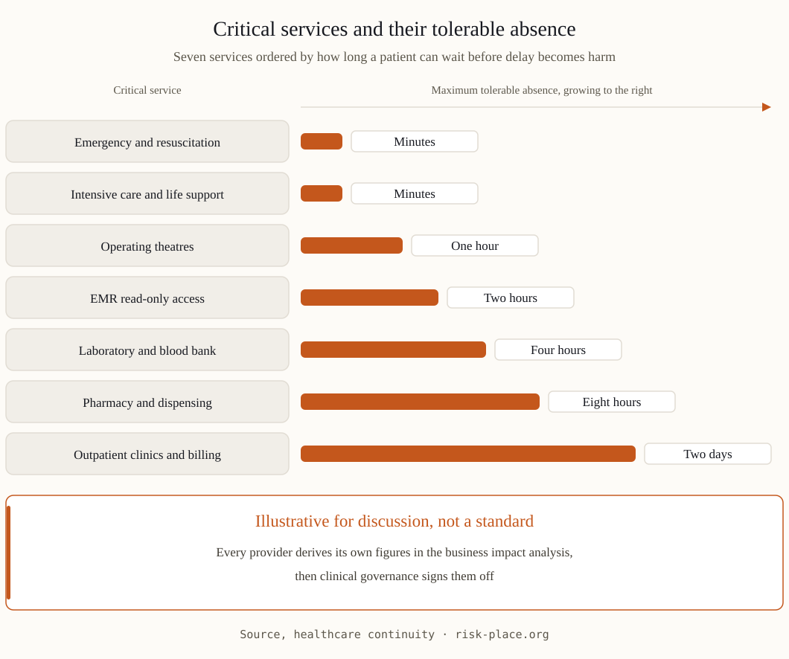

What is different when the service is care
In healthcare, continuity failures convert directly into clinical risk: a delayed result, an unavailable record, a postponed procedure. The BIA therefore ranks activities not only by revenue but by patient-harm potential over time — and recovery objectives are set by clinical tolerance, not commercial preference. That is a higher bar, and regulators, accreditors and insurers all read against it.
The five scenarios that define readiness
| Scenario | The healthcare-specific stakes | The test of readiness |
|---|---|---|
| EMR / HIS downtime | Orders, results, allergies, medication lists inaccessible | Downtime forms and read-only mirrors at ward level; staff trained on the paper path |
| Ransomware | An outage plus a patient-data breach in one event | Segmentation, offline backups tested by restore, a notification path that satisfies UAE data law |
| Utility failure | Power and cooling carry life-support load | Generator autostart tested under load; fuel contracts with delivery SLAs |
| Supply interruption | Pharmaceuticals, consumables, oxygen, blood products | Stock policies per criticality class; alternate suppliers pre-qualified |
| Area incident / access restriction | Staff cannot reach the facility; patients keep arriving | Shift extension protocols, staff accommodation plan, transfer agreements |

The plan, clinical edition
- Ward-level downtime kits. Paper forms, procedures and contact sheets physically present where care happens — a plan on the intranet is unavailable in precisely the scenario it exists for.
- Clinical prioritisation logic. Which services degrade first, which never: decided by clinical governance in advance, so the 2 a.m. decision is an application, not a debate.
- Restore-tested backups. For clinical systems the RPO conversation is about safety; a backup proven only by its existence protects no one.
- Transfer and diversion agreements. Which patients go where when capacity or capability drops — agreed with receiving facilities before the day.
- Communication that keeps trust. Patients, families, staff, regulator, media — pre-drafted, honest, and clinically reviewed.
The sector's hardest lesson, repeated globally: hospitals that rehearse EMR downtime treat it as an inconvenience; hospitals that do not, treat it as an emergency. The difference is a few drills a year.
The UAE regulatory frame
Healthcare operators in the Emirates work under health-authority licensing and inspection regimes, with hospital accreditation standards requiring emergency and continuity management — and public healthcare entities and designated critical facilities fall within the NCEMA 7000 perimeter. Patient data protection under UAE law adds a legal clock to any cyber incident. The practical consequence: continuity evidence in healthcare must satisfy clinical, regulatory and data-protection readers at once.
Frequently asked questions
Where should a clinic with limited resources start?
EMR downtime procedures at the point of care, restore-tested backups, and the utility check — generator, fuel, cooling. Those three cover the incidents that actually occur, and all fit within weeks.
How often should downtime procedures be drilled?
At least annually for the full scenario, plus short ward-level refreshers each quarter — new staff join continuously, and the paper path only works if the newest nurse on the shift knows it.
Does ISO 22301 apply to hospitals?
Yes — and it maps well onto accreditation requirements. For UAE providers the pragmatic route is one continuity system designed against clinical risk, documented to satisfy accreditor, regulator and — where applicable — NCEMA logic together.